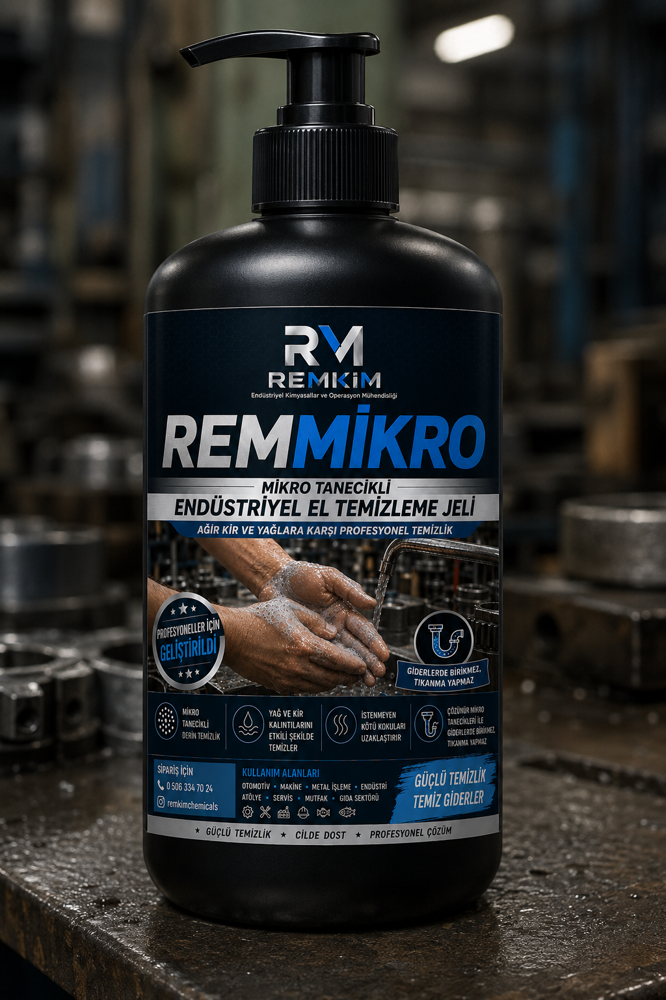

REMMIKRO®
Endüstriyel ortamlarda çalışan kullanıcılar için geliştirilmiş, güçlü temizleme performansını cilt konforuyla birleştiren profesyonel el temizleme sistemidir.
Endüstriyel ortamlarda çalışan kullanıcılar için geliştirilmiş, güçlü temizleme performansını cilt konforuyla birleştiren profesyonel el temizleme sistemidir.

REMMIKRO®, sanayi ortamlarında çalışan personelin ellerinde oluşan ağır yağ, gres, kurum ve endüstriyel kirlerin etkin şekilde uzaklaştırılması amacıyla geliştirilmiş profesyonel el temizleme ürünüdür.
Güçlü temizleme performansını kullanıcı konforuyla birleştirerek günlük kullanım için geliştirilmiştir.
Endüstriyel üretim ortamlarında çalışan personelin ellerinde oluşan kirler, standart sıvı sabunlarla çoğu zaman yeterince temizlenemez.
REMMIKRO®, güçlü temizleme performansı sağlarken sık kullanımda kullanıcı konforunu desteklemek amacıyla geliştirilmiştir.
Üretim personelinin günlük el temizliğinde kullanılır.
Ağır yağ ve gres kirlerinin uzaklaştırılmasına yardımcı olur.
Motor yağı ve endüstriyel kirlerin temizlenmesini destekler.
Metal işleme proseslerinden kaynaklanan kirlerde etkilidir.
Yoğun çalışma ortamlarında profesyonel kullanım sağlar.
Tüm profesyonel üretim tesislerinde kullanılabilir.
Ağır endüstriyel kirlerin uzaklaştırılmasına yardımcı olur.
Profesyonel kullanıcıların düzenli kullanımına uygundur.
Temizleme performansı ile kullanıcı deneyimini dengeler.
Su ile kolay durulanarak pratik kullanım sağlar.
Düşük tüketimle etkili temizlik performansı sunar.
Profesyonel endüstriyel kullanım için geliştirilmiş REMKİM çözümüdür.
Endüstriyel üretimde çalışan personelin kullandığı el temizleme ürünleri yalnızca kiri uzaklaştırmamalı, aynı zamanda günlük kullanım konforunu da desteklemelidir.
REMMIKRO®, bu anlayışla geliştirilmiş profesyonel el temizleme sistemidir.
REMMIKRO®, endüstriyel çalışma ortamlarının ihtiyaçlarına göre geliştirilmiş profesyonel el temizleme sistemidir. Güçlü temizleme performansını kullanım konforuyla birleştirerek günlük endüstriyel kullanımı destekler.
Ürünümüz Hakkında Bilgi Alın